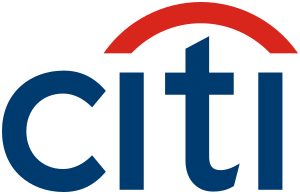

LLMs inside real services
Adding LLM calls to regular Java and Spring services properly: prompts, timeouts, retries, and keeping an eye on cost.
Assistant Vice President at Citi · Pune, India
I'm an Assistant Vice President at Citi and a Java developer at heart. For 9+ years I've built backend systems with Java, Spring Boot and microservices: reactive services on Spring WebFlux and Kafka, data pipelines, and banking APIs. Before Citi I spent four and a half years at Globant, going from Senior Software Developer to Technical Lead to Technical Architect, and led the team. I'm not tied to one stack either. I've also worked with Python, PySpark and AWS, and built frontends in Angular and React.
Career path
01
I like working on the parts of a system nobody sees but everybody depends on: the APIs, the event streams, and the batch jobs that quietly process millions of records.
I started at BNY Mellon writing Spring Batch jobs and APIs for fund accounting. At TIAA I moved into full-stack work with Spring Boot, Angular and Activiti workflows, and built a couple of internal tools along the way. One of them came runner-up in the company hackathon.
I joined Globant as a Senior Software Developer, became Technical Lead in July 2022 and Technical Architect in April 2024. Most of that time was with product companies, where I led the team: I owned the design of event-driven microservices on Spring WebFlux, Kafka and AWS, planned the sprints, reviewed the code and made sure releases went out on time. I also moved into data engineering with Python and PySpark on Databricks, and wrote a batch job that enriches millions of email records for sales and marketing. On the side I ran Globant's Java training program and mentored 100+ engineers until they were ready for project work.
Since January 2026 I've been an Assistant Vice President at Citi on the Banking Payments and Deposits team, turning old mainframe workflows into Java APIs and working on deposit products that customers use every day.
Java is my home ground, but I don't think of myself as only a Java developer. I love building things. Hard engineering problems are fun, but I'm most attracted to the ones with a real business reason behind them.
Current focus: Banking APIs // Microservices // AWS // AI-assisted development
02
I already use AI tools like Claude, Cursor, Copilot and Devin every day for writing code, reviewing it and debugging. What I want next is to get better at building with AI, not just using it. These are the things I'm spending my learning time on right now.
03

Citi India CurrentAssistant Vice President
Senior Software Developer
Application Developer
04
05
Sinhgad College of Engineering, Vadgaon Bk., Pune
Government Polytechnic Pune